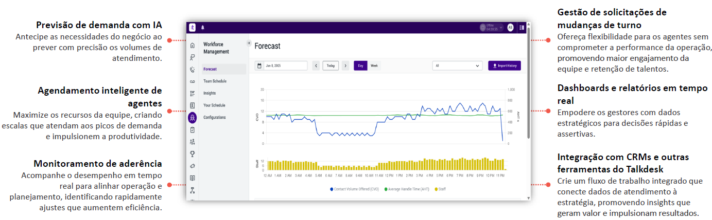

O Workforce Management (WFM) é uma solução moderna em nuvem que prevê demandas, otimiza escalas e utilização, garantindo equipes certas, no lugar e horário certos, nos canais adequados.
Analisa dados históricos e antecipa volume de interações.
Cria escalas considerando habilidades, disponibilidade e regras.
Compara escalas planejadas com atuação real dos agentes.
Agentes solicitam mudanças de turno com autonomia.
Métricas em tempo real ajudam decisões estratégicas.
Sincroniza com CRMs e demais soluções Talkdesk.
O Talkdesk WFM se destaca pela previsão inteligente com IA, criando escalas mais precisas e equilibradas.
Possui integração nativa com o CX Cloud, otimizando a alocação em tempo real.
Sua interface intuitiva e no-code facilita ajustes sem complexidade.
Oferece automação de escalas e recomendações inteligentes, aumentando a eficiência operacional.
Essenciais para previsões confiáveis de demanda.
Estabelecer metas e KPIs para avaliar sucesso.
Organizar escalas com base na demanda e disponibilidade.
Conectar o WFM com CRM e outras ferramentas da empresa.
Estabelecer processo ágil para ajustes de escala.
Monitorar implantação e realizar melhorias constantes.
Ajustar o WFM conforme a operação e cultura da empresa.